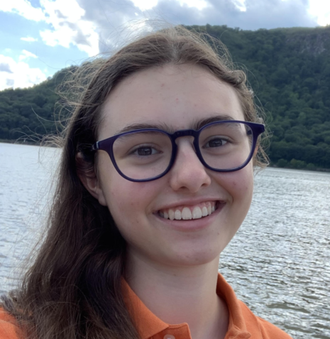

Affiliated Postdocs
| Melinda Soares-Furtado Melinda is a NASA Hubble Postdoctoral Fellow at the University of Wisconsin-Madison. She is investigating anomalous stellar signatures that arise from the accretion/engulfment of substellar companions. Such signatures include chemical enrichment and rotational enhancement. One of her major objectives is to detect a star that has engulfed a planetary companion. Such a star could provide valuable constraints on the bulk composition of the companion, which would have far-reaching implications in the theory of planet formation. Melinda also applies image subtraction reduction techniques to photometric surveys (Kepler/K2) in an effort to search for periodic variability in open clusters. This includes the search for transiting exoplanets in these systems. When she is not glued to her terminal, you may find her hunting for vintage astronomy textbooks, making time-lapse videos of the birds in her garden, or competing in a Beat Saber battle with her children (she always loses). |
|
| Malena Rice Malena Rice is a 51 Pegasi b Fellow at the MIT Kavli Institute. Her research probes the formation and evolution of planetary systems, and she works on a range of related topics including hot Jupiter formation, stellar spectroscopy, and the hunt for Planet Nine. Before arriving at MIT, Malena received her B.A. in Physics and B.A. in Astrophysics from UC Berkeley, and her M.S., M.Phil., and Ph.D. (2022) in Astronomy at Yale University. Malena is passionate about STEM education and accessibility, and she has been heavily involved in various public outreach efforts. Outside of science, her eclectic interests include visiting modern and contemporary art galleries, lifting weights, playing the flute, and eating great bread. |

|
Graduate Students
| Mariona Badenas-Agusti I am a third-year Ph.D. candidate in Planetary Sciences at MIT, where I work with Prof. Andrew Vanderburg and Prof. Sara Seager on ancient exoplanetary systems around white dwarfs (i.e. the final evolutionary stage of intermediate-mass stars such as our Sun). In particular, I am developing new machine learning and statistical tools to characterize the properties of rocky extra-solar bodies that accrete onto the atmospheres of white dwarfs. Before joining MIT, I earned a Bachelor's degree in Astrophysics from Yale University and a Master’s degree in Astrophysics, Cosmology, and High Energy Physics from Universitat Autònoma de Barcelona and the Institute of Space Studies of Catalonia. Outside of academia, I am very interested in the aerospace industry and I am a member of the Space Generation Advisory Council and of Women in Aerospace Europe. |
|
| Bob Aloisi I am returning to UW - Madison to earn an Astronomy PhD after initially earning a BS Chemical Engineering degree many years ago. I am working with Professor Vanderburg on Exoplanet research, initially searching for hot Jupiter planets orbiting white dwarf stars. I recently earned a second major in Physics at UW – Milwaukee, where my research projects included: building payloads to launch on NASA sounding rockets; finding timing solutions to constrain the properties of several pulsars; updating the Census of the Local Universe (CLU) galaxy catalog, which is referenced when gravitational waves are observed; and traveling to the University of Sydney, where I searched for radio bright supernovae using the first survey images from a new radio telescope array called the Australian SKA Pathfinder. I enjoy stargazing, campfires, fishing and other outdoor activities. |
|
| Lizhou Sha I am a second-year PhD student in astronomy at the University of Wisconsin–Madison. I use advanced computational techniques to uncover unusual planetary system architectures. I graduated from the Massachusetts Institute of Technology in 2018 with an SB in physics. My first job after graduation was with NASA’s TESS space telescope, whose mission is to search most of the sky for nearby transiting exoplanets. Under the guidance of Dr. Chelsea X. Huang, I helped build, maintain, and execute one of the mission’s two planet detection pipelines. |

|
| Zoe de Beurs Zoe is a first-year PhD student studying Planetary Science at MIT as an NSF Graduate Research Fellow. Her research interests include using machine learning for exoplanet detection, planetary atmospheres, and mitigating stellar activity in radial velocity measurements to become sensitive to the signals of earth-twins. When Zoe is not searching for exoplanets, she can be found drinking copious amounts of coffee, watering her plants, or advocating for making science more accessible through outreach and equity and inclusion initiatives. |

|
| Sydney Jenkins Sydney is a first-year NSF Graduate Research Fellow in the MIT Department of Physics. She previously earned a BA in physics and BS in computer science at the University of Chicago. During her time at UChicago, she worked on projects studying ultra-faint dwarf galaxies and developing machine learning tools for the classification of galaxy mergers and variable stars. She is currently using TRES to measure the primordial metallicity of white dwarfs in binary systems. This will place constraints on how planets are perturbed toward their host stars. Outside of astronomy, she enjoys hiking, tending to her indoor garden, and exploring Boston. |
Affiliated graduate students

Post-baccalaureates
Undergraduate Students


{kind=link}
{kind=link}
{kind=link}
{kind=link}
{kind=link}
{kind=link}
{kind=link}
{kind=link}
{kind=link}
{kind=link}
{kind=link}
High School Students
| Gabrielle Ross: Gabrielle Ross is a rising High School Senior at The Brearley School. She is an avid programmer and loves all things physics and astronomy related. This summer she is working with Professor Andrew Vanderburg on training a classifier with ground telescopes to determine how many stars, planets, galaxies, etc. are on each pixel of the larger-pixel TESS telescope image sets. Previously, Gabrielle interned at the Naval Research Laboratories in creating an algorithm to sort infrared astronomical data using custom feature extractors. For fun outside of school, Gabrielle creates apps, plays Varsity Lacrosse as the goalie, and goes backpacking. |
 |
{kind=link}
Former group members
- Maura Lally (Summer 2019-Spring 2022 originally as a Northwestern University undergraduate and a Cornell graduate student)
- Ben Havlicek (Fall 2020 as a University of Wisconsin-Madison undergraduate)
- Ben Steck (Fall 2020-Summer 2021 as a University of Wisconsin-Madison undergraduate)
- Anne Dattilo (Fall 2017-Summer 2019 as a University of Texas undergraduate.)
- Aditya Shah (Fall 2018-Spring 2019 as a University of Texas undergraduate).
- Gerlinder Difo Cheri (Summer 2018 as a University of the Virgin Islands undergraduate)
- Rayna Rampalli (Summer 2017 - Spring 2019 as a Wellesley undergraduate and a Columbia bridge student)
- Clea Schumer (Summer 2017 as a Harvard undergraduate)
- Andy Mayo (Spring 2014-Summer 2017 as a Harvard undergraduate.)